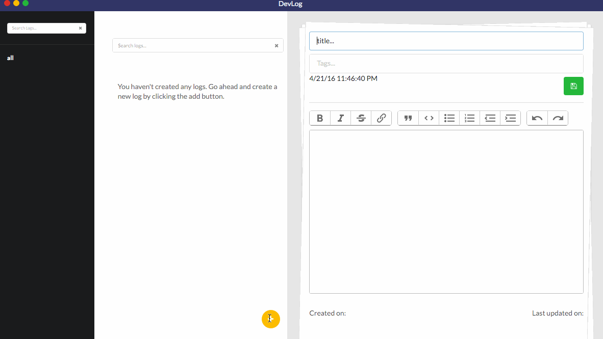

Devlog
A log book.
Have something on your mind, note it down in devlog. An idea striked you, jot it down here. It supports tags making it convenient to manage your logs.It is a cross platform, desktop application designed to assist you in keeping track of your notes, ideas etc in a simple yet intuitive way.
Key Features
Ease of use
Open, add and write that's it. Devlog with its auto save functionality, just requires you to write down stuff and saves you the trouble, of having to save everytime you write something.Don't believe me, see it for yourself.
 Manual save is also available, for those who are uncomfortable with autosave. Press (cmd or ctrl) + s or click on save and be in peace.
Tagging
Tags allow you to organize your logs. It allows you to group similar log entries together.
It also supports multiple tags, so you can add multiple tags to a log. By default, there is a tag named "all" which defaults to all the logs
that would be created. Create multiple tags be typing multiple tags seperated by comma.
Recover deleted logs
We are human beings and we tend to make mistakes a lot. Don't worry if you have removed a log by accident. Stay calm. Press
(cmd or ctrl) + r or choose restore/delete from options menu.
Voila! all your deleted logs are safe. Choose what you want to do.
There are 2 options, delete and restore. Delete, removes the log permanently from the application and the log deleted cannot be recovered
after this action. The second option, restore, choose it if you wish to restore the log back into the app.
After chosing an action, press save changes. There you go, your logs are restored/deleted depending on your choice.
Click cancel if you don't want to take any action.
Note: The list of deleted logs can grow to be a huge mess. Make sure, you permanently remove any logs that you don't
need anymore.
Feedback
If you would like to see a new feature or report an issue, go ahead and create a new issue in github. You can find all the necessary links in the footer.Built with
Devlog is built with web technologies (html/js/css)
If you would like to, contribute to the source code, create a pull request on github. All types of contributions are welcome.